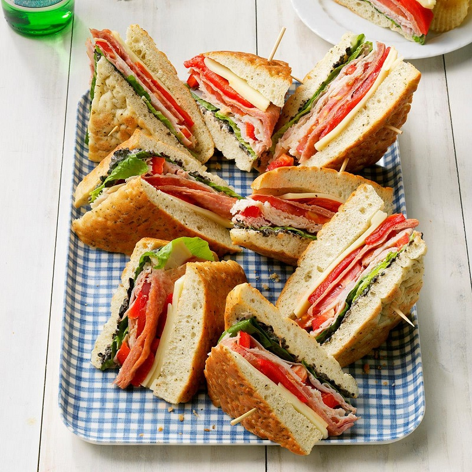

EASY PICNIC FOOD IDEAS.
One of the indispensable things when going to a picnic is the food. However, you will not have too many hours to prepare sophisticated and complex dishes, right? Then with the simple picnic dishes below, it will be easy to bring along and help the members to recharge enough!
1. Sandwich
Sandwiches or sandwiches are a familiar picnic food and are very popular on a trip. However, to refresh the taste for members you can F5 ingredients such as ham, pate, sausage and vegetables! With this dish you can easily bring it to a picnic, picnic or make camping food too!
Materials need to prepare:
• Pillow or triangle bread
• Thinly sliced sausage
• Thinly sliced ham (bacon)
• Lettuce, tomato ...
• Chili sauce, ketchup, mayonnaise
MAKING:
• Place a slice of bread on top of a plate then turn ingredients such as sausage, ham and vegetables on top. Should mix between meat and vegetables to not get bored. Finally, add the sauce, ketchup and chili sauce and place the remaining bread on top.
•When eating, cut diagonally to divide the cake into 2 parts for easy enjoyment. In addition, with this picnic dish you can also put it on the grill for about 1-2 minutes to make the cake crispy and hotter!
2. Beef hamburger
Referring to the cold food to go to a picnic, surely you will not be able to ignore the "divine" hamburger. Especially, if your trip has children, they will love it! Add to the menu of your picnic food right away !

Materials need to prepare:
• 300gr ground beef
• Hamburger crust (buy from supermarket)
• Sliced cheese
• 2 tomatoes
• Salad
• Spices: salt, sugar, fish sauce, ketchup, chili sauce
• 1 onion
MAKING:
• Beef marinated with 1 teaspoon fish sauce, 2 teaspoons of sugar, 1/2 teaspoon of pepper and then marinated for 30 minutes for the mixture to evenly infuse spices. After you finish the marinade, you will squeeze the beef into round pieces about the size of the crust. Put the beef in the cooking oil and simmer until the outside is almost golden.
• Tomatoes, onions cut into thin pieces. Place 1 piece of crust underneath, then top with lettuce, tomatoes and beef and cover with cheese. Continue to add tomatoes, lettuce on top and cover the cake.
• This is a dish that can be taken away so you can completely prepare for the members. To prevent the cake from crushing, you should store it in small boxes!
3. Meatball Spaghetti
Add suggestions of simple dishes that are easy to make when going on a picnic for your reference is Spagetti noodles. This dish has a very simple and quick way to cook that in the article I have introduced in previous article 7 delicious picnic dishes ! However, in this simple picnic dishes I will share another recipe that is equally delicious!

Materials need to prepare:
• 1 pack of Spaghetti
• 3 tablespoons tomato sauce
• 2 tomatoes
• 1 tablespoon olive oil
• 300gr of ground pork or ground beef
• Onions, minced garlic
MAKING:
• Break the spaghetti in half, then boil it in boiling water. When boiling can add 1 teaspoon of cooking oil. After the noodles are cooked, take them out to drain and mix with cooking oil to prevent the noodles from sticking together.
• Ground meat is mixed with spices, pepper, garlic and onion, then chopped into small pieces to taste. Tomatoes are washed, sliced and then fragrant with garlic onions. Add in tomato sauce to create a smooth, creamy mixture. Add meat and noodles to the sauce and mix well.
4. Mixed fried rice
Most easy-to-make delicacies are usually temporary because they won't keep you full for long. If you do not know what to eat for a picnic to get full nutrients and do not go hungry fast, add your picnic menu to mixed fried rice!

Materials need to prepare:
• Cold rice
• 2 eggs
• Roll, sausage, cold meat
• 4-5 tiger prawns
• Vegetables: peas, potatoes, chopped carrots, sweet corn
• Spices: soy sauce, fish sauce ...
MAKING:
• Black tiger shrimp peel off the shell and then fry it in low heat with onion and spices. Mix rice together with chicken eggs then fry in a pan. Add soy sauce and spices to taste. Then, add the sweet corn, carrots, peas and fried shrimp to the island evenly.
• Indeed this is an easy and extremely simple picnic dish. To make the fried rice better, you should use cold rice or cooked rice from the previous day and then put it in the refrigerator. This is also a suggestion for those who are looking to refer to food to take a sightseeing or picnic there!
5. Kimbap - Korean rice rolls
Kimbap is not only one of the simple dishes that is easy to make, but also a lot of people love it, especially young children. Compared to other picnic dishes, Gimbab can be very well preserved. Furthermore, they are suitable for both winter and summer use, making them very convenient to carry. If you still do not know what to go camping to eat or want to find food to travel, please refer to this suggestion.

Materials need to prepare:
• 1 pack of seaweed
• 3 eggs
• Sausage
• 2 cucumbers
• 1 carrot
• Vegetable
• Soft rice
• Bamboo sheet for making kimbap (bought from supermarket)
MAKING:
• Vegetables are washed and boiled. Eggs are cooked and then sliced into long strands. Similar to sausages, cucumbers, and carrots, after being boiled, they are also sliced likewise. Spread the bamboo sheet on a flat surface then place the seaweed piece on top and spread the rice over 2/3 of the seaweed. For the ingredients cucumber, carrot, sausage, eggs, vegetables .... up and then roll to tighten your hand.
• Compared to other simple picnic dishes, how to make kimbap is easy to make and does not take too much time. Not only suitable for picnics, picnics! If you are looking for food to go for a trip or for travel, you can consul
6. Grilled meat skewers with vegetables
Picnic definitely will be indispensable to barbecue , right? In particular, if your picnic location or campsite chooses to bake food, do not hesitate to prepare a barbecue. One of the easiest barbecue dishes to make is probably the grilled skewers.

Materials need to prepare:
• Grilled skewer
• 500g Square beef or pork cubes
• Minced garlic and onions
• 2 teaspoons oyster oil
• 1 teaspoon of BBQ sauce
• The potatoes, green peppers, and purple onions are sliced into thin square slices
MAKING:
• Meat after slicing is mixed with garlic, minced onions and oyster oil for about 30 minutes to infuse spices. Then bring meat skewers with the prepared vegetables. Should skewers between the meat and vegetables to prevent the meat from getting too dry. When finished baking is also much better.
• When preparing a barbecue, you should store it in a separate box or thermos so that the meat is always the best. When baking, you can spread a layer of BBQ sauce on the surface to make the meat richer.
7. Korean grilled bacon
Being on the list of simple and easy-to-make barbecue dishes are definitely indispensable for Korean-style grilled bacon. Do not hesitate that you do not immediately add this dish to your barbecue menu. Guaranteed with grilled bacon you will no longer have to wonder what the barbecue is!

Materials need to prepare:
• 500gr of bacon just thinly sliced
• 3 tablespoons Korean barbecue sauce (available from the supermarket)
• Minced garlic and onions
• Salad with salad
MAKING:
• Single meat after washing is mixed with garlic, minced onions. You can add spices as you like. Then add Korean barbecue sauce and cover with food wrap. When making picnic food you can prepare from morning to more spice up the meat.
8. Barbecue with BBQ sauce
If you want to show off your chef skills with homemade BBQ dishes , this will be a perfect suggestion. BBQ barbecue sauce is a simple picnic dish because compared to other barbecue dishes you just need to marinate meat with pre-bought spices. With a barbecue you can make food to go on a picnic, go for a picnic or go camping.

Materials need to prepare:
• 500gr thinly sliced beef
• Minced garlic
• 3 tablespoons of BBQ sauce
MAKING:
• Beef is marinated with spices, pepper, minced garlic and BBQ sauce. When preparing baked goods at home you should marinate it in a box and cover it tightly or use plastic wrap. Marinate meat for at least 1-2 hours before baking on the stove.
9. Spinach chicken thighs
Besides the familiar cold picnic dishes , you should try exchanging meals for members with spinach chicken drumsticks. Although the way to make it will take a bit of time, everyone will surely enjoy this strange and attractive dish! If you still do not know what to eat for a delicious picnic, please refer to this dish!

Materials need to prepare:
• 400gr sticky rice
• 100gr green beans
• 2 teaspoons salt
• 3 tablespoons coconut milk
• 4 chicken thighs
• Spices: garlic powder, five flavors, pepper, seasoning seeds
MAKING:
• Glutinous rice is soaked overnight with water (soaked overnight). Green beans can be soaked for 3-4 hours. After soaking, let it drain and mix with salt. Let the rice steam boil. When it's almost ripe, sprinkle coconut milk on top.
• Chicken thighs are washed and marinated with salt, pepper, seasoning seeds, garlic powder, five flavors and then squeezed to infuse spices. Marinate the chicken about 1-2 hours and then bring it deep fried. Put the sticky rice on the plastic wrap and place the chicken thighs in the middle. Add sticky rice to cover the chicken thighs and wrap tightly. Then fry the sticky rice until the outside is golden and crispy.
• This is one of those simple and delicious dishes that is easy to make. You just need to spend a little time preparing to change for simple picnic dishes that are somewhat boring!
10. Avocado and tomato salad
Besides salty dishes, you should also add to your menu salads to ensure full nutrition and help not get sick when eating a lot of protein. Avocado and tomato salad is a good suggestion if you are still not sure what to eat for a picnic?

Materials need to prepare:
• 1 teaspoon Olive oil
• 1 teaspoon Lemon juice
• 1/2 teaspoon of spoon is chopped
• 1/2 teaspoon pepper
• 1 avocado chopped into squares
• 200gr cherry tomatoes cut in half
• 1 cucumber cut into thin pieces
• 1 sweet corn
MAKING:
• Add olive oil, lemon juice, chopped cumin into a large bowl, then season with salt and pepper. Continue to add the prepared butter, tomato, cucumber and corn to mix with the water mixture above.
• If you want to take it away, you should separate the ingredients in a bag and store in the refrigerator cooler (or in a thermos). After that, when you eat it, mix it with the sauce so that the butter and tomatoes are not crushed or soft.
11. Mixed fruit
Many people often have a habit when preparing food for a picnic often focusing on protein or protein dishes and forgetting that the vitamins in fruit are also very important. In particular, during hot summer days, you should try adding mixed fruit to your fast food menu , make sure everyone enjoys it!

Materials need to prepare:
• 1 teaspoon honey
• 1 tablespoon orange juice
• 1 teaspoon thin peeled lemon peel
• 2 kiwis peeled and sliced thin
• 1 peeled orange and cut into chunks
• 2 apples cut in square pieces
• 1 bunch of grapes or raspberries
• 1 mango cut in square pieces
MAKING:
• Mix the honey and orange juice to dissolve it together. Then turn to the fruit cut into small pieces and mix again to soak in water.
• When preparing food for a picnic you should preserve the fruit separately so that it does not become soft, then when you eat it, mix it with honey and orange juice. Finally sprinkle on a spoonful of crushed lemon peels to enhance flavor.